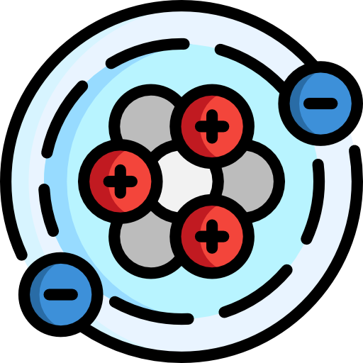

¿Qué son los modelos atómicos?
Son representaciones gráficas de los átomos. Es decir dibujos.
Los primeros modelos atómicos datan de la antigüedad clásica,
cuando los filósofos y naturalistas se aventuraron a pensar y a
deducir de que estaban hechas las cosas.
Conforme se realizaron hallazgos científicos adicionales,
surgieron nuevos enfoques para integrar la información obtenida.
Este proceso ha continuado a lo largo de los siglos hasta el presente,
donde la tecnología actual posibilita la observación de átomos
mediante microscopios, facilitando la determinación del modelo preciso.

¿Qué son los átomos?
Las partículas microscópicas conocidas como átomos constituyen la base de toda la materia que experimentamos en nuestra vida diaria, desde nuestros cuerpos y los alimentos que consumimos hasta la ropa que vestimos, así como las imponentes estructuras de rascacielos y aeronaves.
Debido a su diminuto tamaño, estos átomos no son perceptibles mediante los microscopios convencionales. En realidad, los átomos se componen de partículas aún más diminutas, a saber: protones, neutrones y electrones.
Los protones exhiben carga eléctrica positiva, a diferencia de los neutrones que carecen de carga eléctrica, y conjuntamente conforman el núcleo del átomo.
Los electrones están moviéndose alrededor del núcleo de manera similar a los planetas que orbitan alrededor del Sol, se encuentran, caracterizados por su carga eléctrica negativa.
Dalton
El primer modelo atómico con bases científicas.
Sostenía que todo estaba hecho de átomos, indivisibles e indestructibles.
Proponía que los átomos de un mismo elemento químico eran iguales entre sí
Thomson
Asumía que los átomos estaban compuestos por una esfera de carga positiva y los electrones estaban incrustados en ella, como las pasas en el pudín.
Rutherford
Determinó que el átomo está compuesto por un núcleo de carga positiva y los electrones, que giran libremente alrededor de este.
Propone por primera la existencia del núcleo atómico.
Bohr
Niels Bohr propuso este modelo para explicar cómo podían los electrones tener órbitas estables (o niveles energéticos estables) rodeando el núcleo.